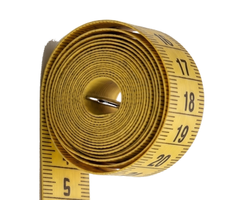

HAND-FINISHED, SAN DIEGO & TIJUANA
Garments made with intention,
stitched to fit your story.
Karla designs and tailors costumes, commissions, and alterations — from ready-to-ship pieces to custom collaborations, made by hand and built to last.
